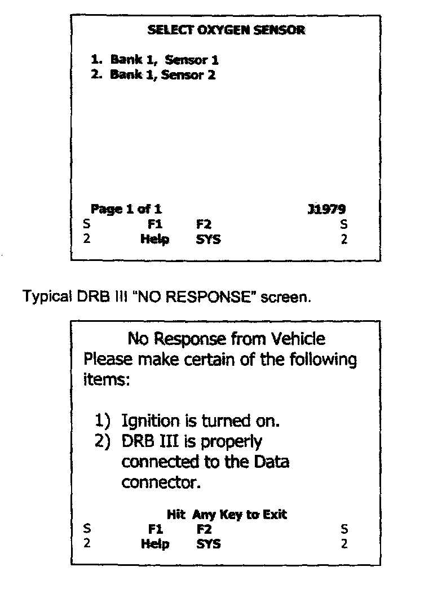

5. O2 Monitoring Results

MODE 5 - Request Oxygen Sensor Test Results
Functional Description - The purpose of this test mode is to allow access to the on-board oxygen sensor monitoring test results as required by OBD-II regulations. Use of this mode is "optional", depending on the method used by the vehicle manufacturer to comply with the requirement for oxygen sensor monitoring. Therefore, since support of this mode is manufacturer discretionary, the Chrysler Group has elected NOT to support Mode 5 for 02 sensor monitoring test results (see Mode 6).
When using Mode 5 on a Chrysler Group vehicle, regardless that it is not supported, the software will query using Mode 1 to determine 02 sensors. Consequently on a Chrysler Group vehicle eventually a "NO RESPONSE" message is the only message the user will receive.